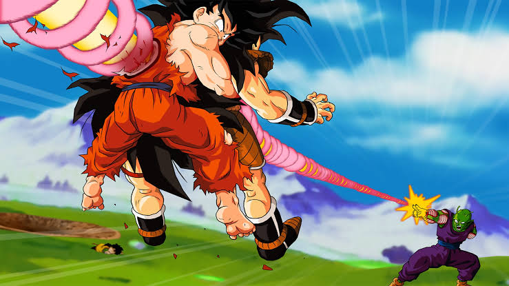

goku morre na grande batalha contra Raditz
Goku morreu pela primeira vez durante a batalha em que ele e Piccolo se uniram para lutar contra Raditz. Apesar das duas forças combinadas, Raditz provou ser um desafio muito grande para os dois enfrentarem. A fim de derrubar o Saiyajin, Goku e Piccolo bolaram um plano ousado que envolvia Goku agindo como isca.
Se sacrificando para derrotar Raditz
Já a primeira morte real de Goku pegou muitos fãs de surpresa e ocorreu em Dragon Ball Z, durante a inesquecível batalha contra Radiz. Utilizando o seu próprio corpo para segurar o seu irmão, Goku e Raditz acabaram sendo perfurados pelo Makankosappo de Piccolo.
Raditz implora para seu irmão reconsiderar o que está fazendo, mas Goku apenas se segura ainda mais forte. Piccolo finalmente carrega enertgia suficiente para a técnica, e lança em Raditz. O ataque vai diretamente pelo peito de ambos os irmãos Saiyajin. Os dois caem no chão feridos gravemente. Piccolo se aproxima de Raditz, que lamenta que Goku sacrificou sua vida tolamente.
Piccolo diz a Raditz sobre as Esferas do Dragão e que elas podem realizar qualquer desejo, incluindo reviver os mortos, mas Raditz secretamente manda essa mensagem para seus dois parceiros no espaço. Raditz triunfantemente diz a Piccolo que esses dois são bem mais fortes que ele, e provavelmente eles virão para a Terra para usar as Esferas dp Dragão e revivê-lo em um ano. Raditz ri loucamente, e Piccolo fica irado e o mata.

link para mais informações no forum oficial